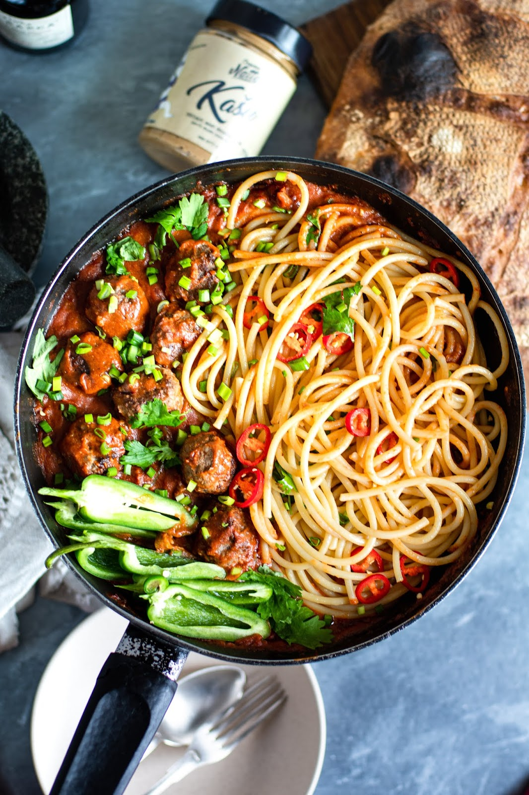

Ülilihtne pastakastme retsept.
Kastme teeb eriliseks see, et sinna on lisatud indiapähklivõiet, mis muudab seda retsepti veidike eksootilisemaks.
Lisaks on see kaste parajalt vürtsikas, mis sobib veiselihast lihapallide ja spagettidega imehästi kokku.
Selle kastme tegemine võtab kokku umbes 15-20 minutit!
Pasta kaste:
Oliiviõliu
1 punane sibul
1 spl Natty indiapähklivõiet Kašu
1 tšilli kaun
2 rohelist jalapeno kauna
150 ml valget veini
500g Tomatipastat
Tabascot
Musta pipart
Fariinisuhkur
Meresoola

Lihapallid:
500g Veisehakkliha
1 M suuruses kanamuna
Musta pipart
Meresoola
Lisandid:
250g spagette
Rohelist sibulat
Koriandrit
Pasta kastme jaoks kuumuta pannil õli, tükelda sibul, tšilli ja jalapeno ning prae pannil kuldseks.
Lisa indiapähklivõie ja kuumuta mõni minut vaiksel tulel.
Seejärel lisa valge vein ja redutseeri ning seejärel lisa tomatipasta.
Lase kaane all paar minutit podiseda.
Samal ajal valmista lihapallid.
Selleks sega omavahel hakkliha, muna ja maitsesta mereoola ning pipraga.
Prae teisel pannil kuldseks ning pane tomatikastme sisse järel küpsema mõneks minutiks.